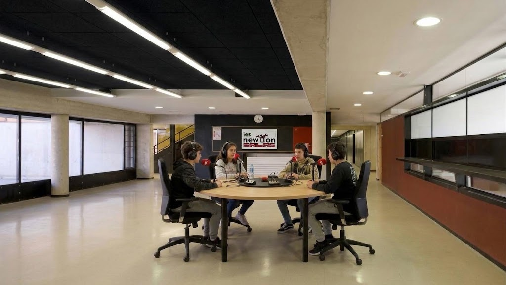

IES
Newton Salas
Erasmus+
Unión Europea
Las voces del Newton.

▥
frecuencia
◉
FREC. 01
●
Hay mucho de qué hablar.
Entrar
↗
BUENAS CONVERSACIONES · SIN INTERFERENCIAS
 IES Newton Salas
IES Newton Salas